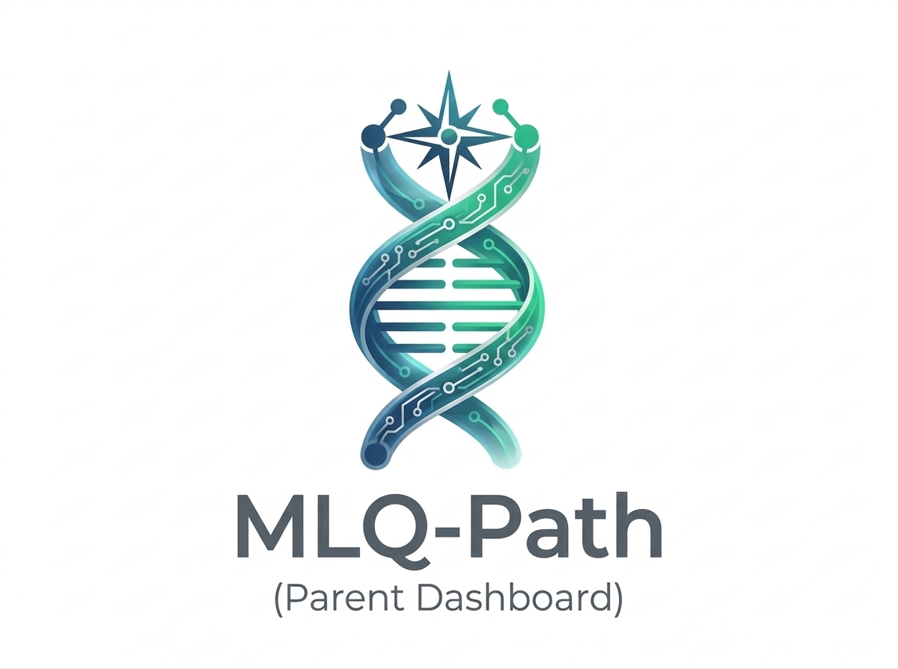
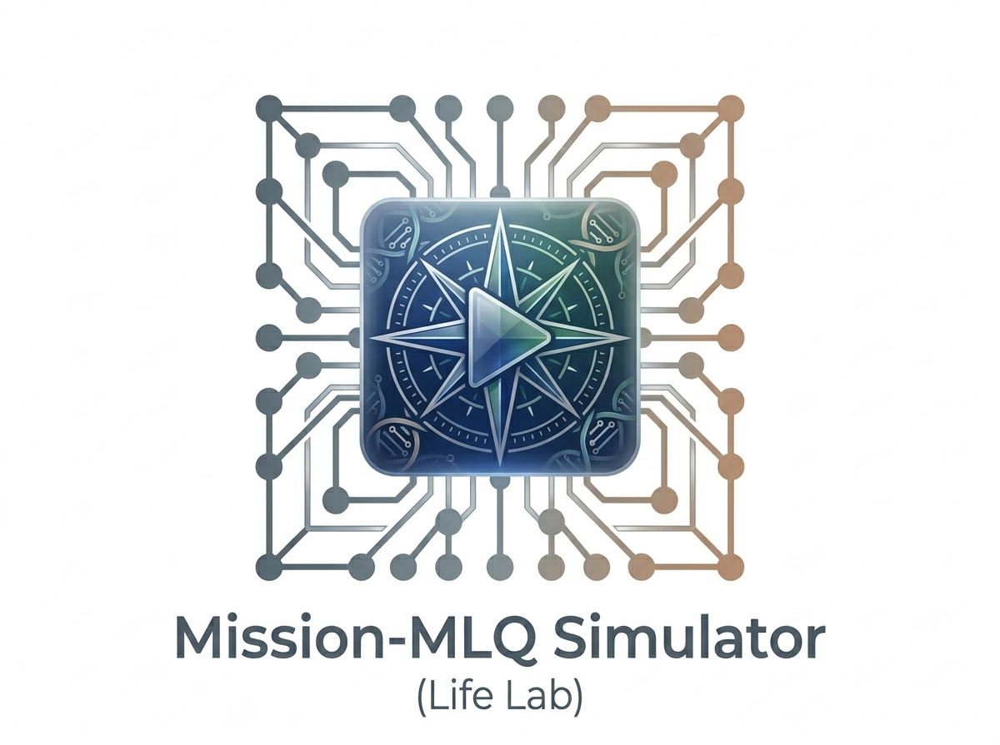
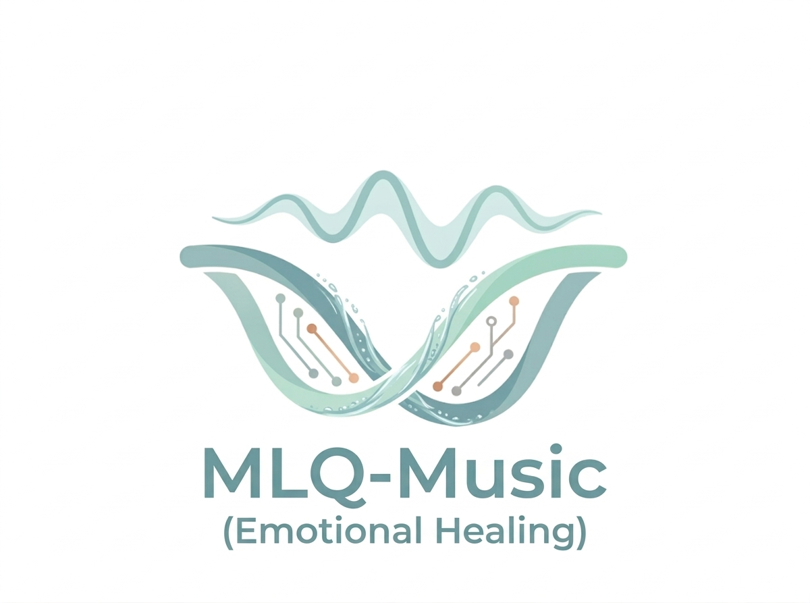

ทุกก้าวเล็ก ๆ ที่คุณเริ่มวันนี้ คือรากฐานของอนาคตที่ยิ่งใหญ่ ไม่มีใครเก่งตั้งแต่เริ่ม
ความล้มเหลวคือข้อมูล — ไม่ใช่ตราบาป
กรอกวันเกิดและเวลาเกิด (โดยประมาณ) รับ Destiny (2 หลัก) และ Life Path (1–9) พร้อมทักษะที่ควรพัฒนา ฟรี! 🎯
รหัส 6/42 ของเราไม่ใช่แค่ตัวเลข — มันคือการสร้าง “ระบบที่ยืดหยุ่น” เพื่อดูแลผู้คน
เราไม่เน้นคำสอนที่น่าเบื่อ (No Blah Blah Blah) แต่เน้น “ภารกิจชีวิต” ที่ปรับตามช่วงวัย และใช้ คานผ่อนแรง เพื่อให้การเคลื่อนไหวเป็นส่วนหนึ่งของชีวิตอย่างยั่งยืน
Mission‑MLQ สร้างพื้นที่ให้คุณได้ Check Human Dignity ผ่าน Mission Log, เสียงเพลงจากรหัสชีวิต และชุมชนที่เข้าใจ
สมดุลชีวิตที่สอดคล้องกับเส้นทางของคุณ
ใช้เครื่องมือที่ทรงพลังเพื่อเดินบนเส้นทางของตัวเอง

Notion Template · Roadmap เฉพาะบุคคล
Dynamic Dashboard — กำลังซิงค์ภารกิจ

Roblox / Minecraft · Life Simulator
อุปสรรคชีวิตกลายเป็นเกม สนุก 80% เรียนรู้ 20% — ฝึกทักษะโดยไม่รู้ตัว

Focus Frequency · DNA เพลงจากรหัสชีวิต
คลื่นเสียงเพื่อการฟื้นฟูเยียวยา สงบ และกลับเข้าสู่เส้นทาง
“เมื่อรหัสชีวิต ไม่ใช่แค่ตัวเลข… แต่คือ Data ที่ใช้ตัดสินใจเพื่อชัยชนะ”
สังเกตและซัพพอร์ตลูกให้ถูกจุด โดยไม่ต้องบ่น (No Blah Blah Blah)
“มันเป็นไปได้… ถ้าเพียงแค่ไม่หยุดเดินกลางทาง”
✨ ทุกความผิดพลาดคือบทเรียนที่ทำให้เรากลับมาแข็งแกร่งขึ้น ✨
พื้นที่แลกเปลี่ยนสำหรับครอบครัวที่มีรหัสชีวิตใกล้เคียงกัน รับฟังโดยไม่ตัดสิน
ทุกวันคือโอกาสใหม่ที่จะก้าวต่อไป อย่ารอให้พร้อม — เริ่มจากสิ่งที่พอทำได้วันนี้ แล้วค่อย ๆ ปรับไป
“เพราะอยู่บนเส้นทางชีวิต ฝันที่ใหญ่จึงเป็นจริงได้”